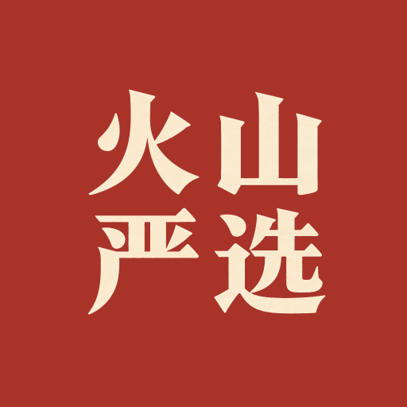
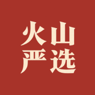

棋盘格与壁纸处即图标 PNG 的透明区域——保存到桌面后，这些位置会透出壁纸或底色。
iOS 对图标套圆角蒙版，但 PNG 透明四角仍会露出壁纸
系统按圆形 / 圆角方形蒙版裁切，透明背景缺少满版底色

圆形蒙版
圆角方形
安装为桌面应用后，任务栏与开始菜单中的方形图标

icon-180.png180×180 · iPhone 用
icon-192.png192×192 · 安卓/桌面
icon-512.png512×512 · 高清/maskable